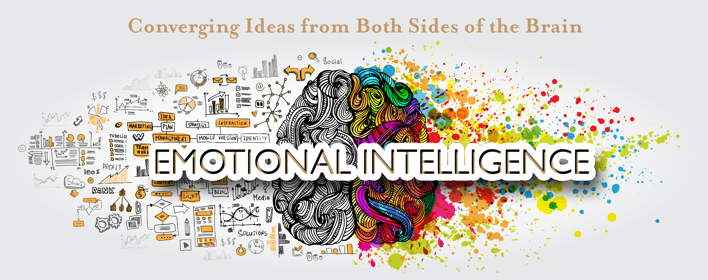
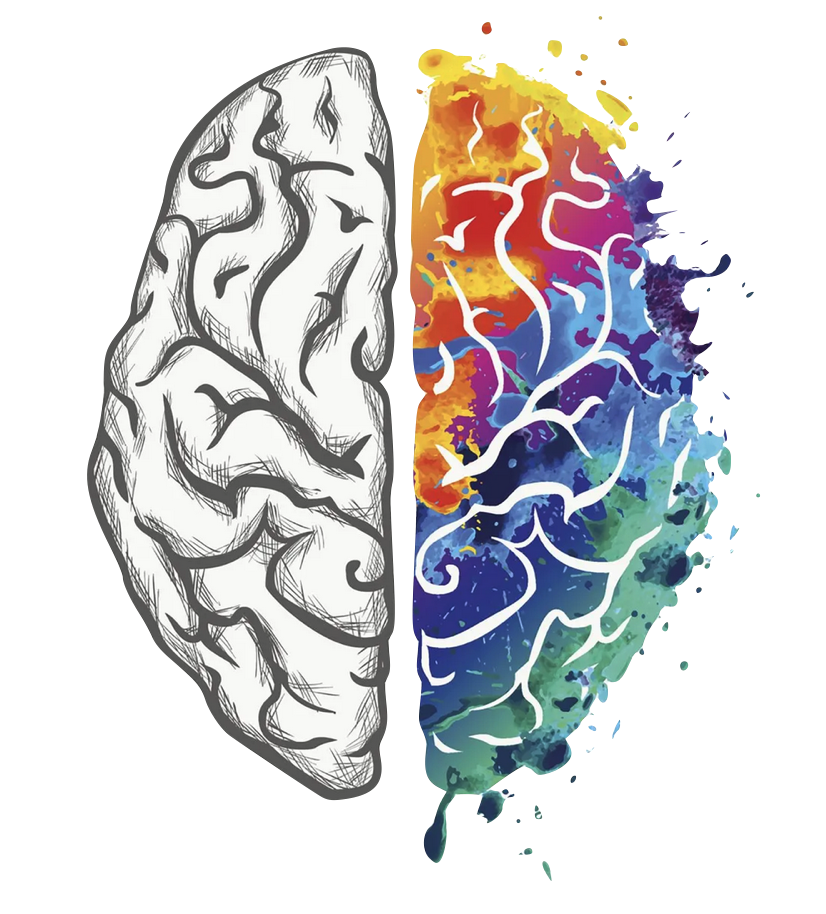

Emotional Intelligence
What is Emotional Intelligence?
The term “Emotional Intelligence” now commonly referred to as EQ, emerged in the 1990’s in order to develop ways to scientifically measure the difference between people’s abilities in and around their emotions.
Researchers such as Mayer and Salovey, soon discovered that some people seemed to be better than others when it came to identifying others’ feelings and solving problems involving emotional issues. They also seemed to be better at identifying their own feelings.
In practical terms, this means being aware that emotions can drive our behavior and impact people (positively and negatively), and learning how to manage those emotions.
How is it different to IQ?
IQ tests measure your ability to solve problems, use logic, and grasp or communicate complex ideas.
EQ tests measure your ability to recognize emotion in yourself and others, and to use that awareness to guide your decisions.
So Why Does EQ Matter?
It’s a scientific fact that emotions precede thought. When emotions run high, they change the way our brains function. Diminishing our cognitive abilities, decision-making, and even interpersonal skills. Understanding and managing our emotions (and the emotions of others) help us to be more successful in both our personal and professional lives.
On a personal level, emotional intelligence helps us:
• Have uncomfortable conversations without hurting feelings.
• Manage our emotions when stressed or feeling overwhelmed.
• Improve relationships with the people we care about.
At work, emotional intelligence can help us:
• Resolve conflict.
• Coach and motivate others.
• Create a culture of collaboration.
• Build psychological safety within teams.